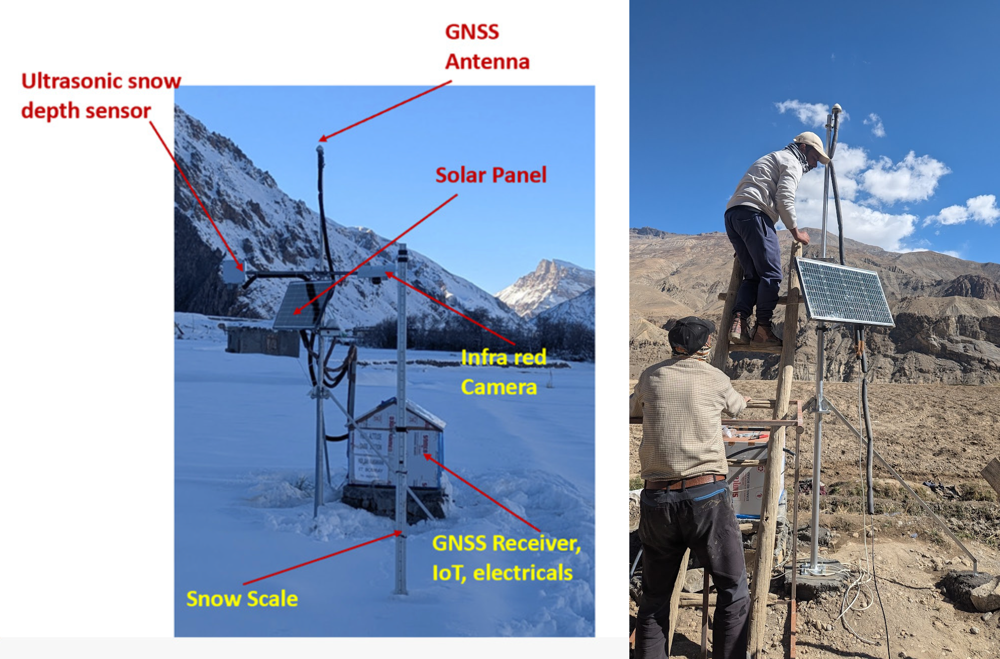
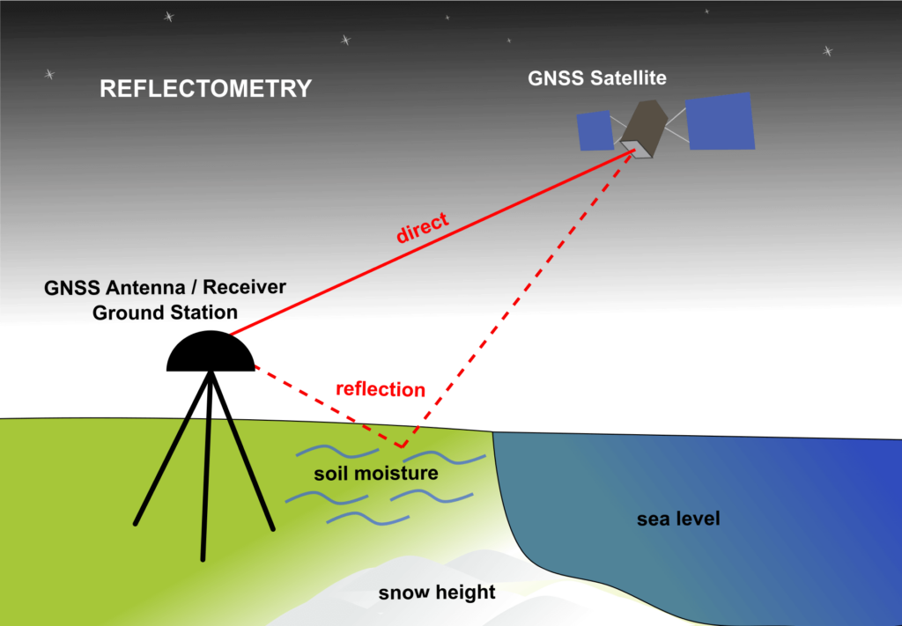
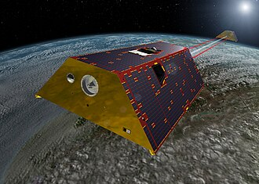

Advanced GNSS Station
A low-cost GNSS CORS station was deployed and developed at Mane in Spiti Valley to provide accurate positioning data and estimate geophysical variables, such as snow depth and soil moisture, using GNSS-IR technology. The station integrates a Tallysman antenna and an ArduSimple receiver, enabling reliable positioning in remote, high-altitude terrain.

GNSS Meteorology/Reflectoemetry
Estimating geophysical parameters using GNSS reflectometry: Applications to soil moisture and snow depth

Satellite Gravimetry
Deriving high SNR (Signal to Noise ratio) MASCONS from GRACE level 2 observations

Imaging Geodesy
Advancing towards 3D velocity mapping to deepen our understanding of glacier dynamics.